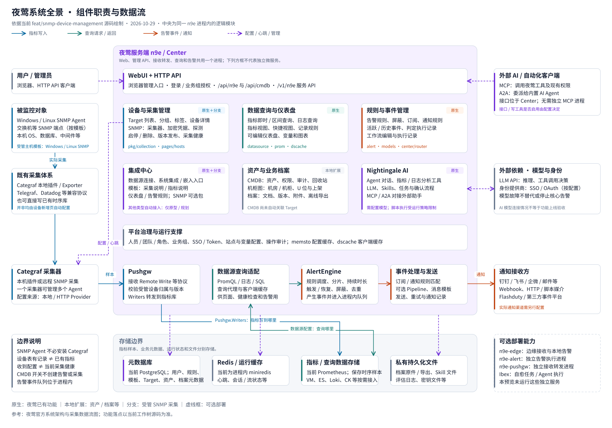

当前分支 feat/snmp-device-management · 核对日期 2026-10-29 · 参考夜莺官方架构，按当前源码与本地部署展开。
feat/snmp-device-management

原生功能、CMDB / 档案等本地扩展、分支 SNMP 管理均已标明。多类型设备按模板自动接入仍是设计原型。
Pushgw.Writers 决定写入位置；数据源配置决定查询位置。实时采集指标在 Prometheus，设备 / 模板 / 资产等在 PostgreSQL。
官方系统架构 · 官方数据流图。本轮未重新验收外部通知、LLM 或各模块全部业务行为。